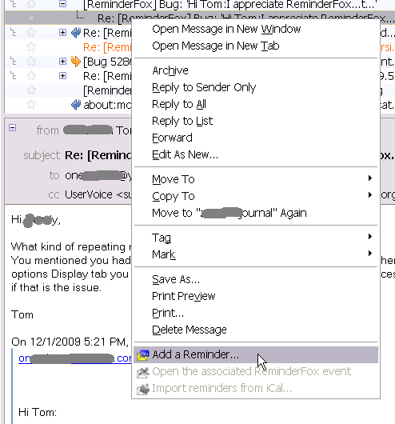
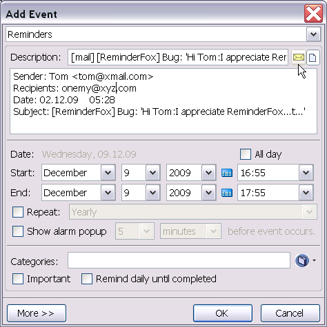
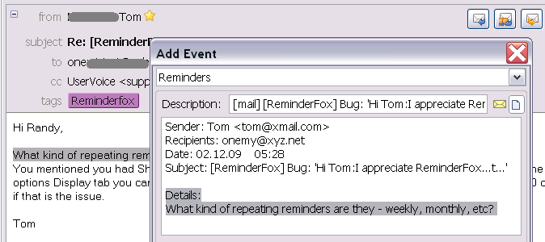
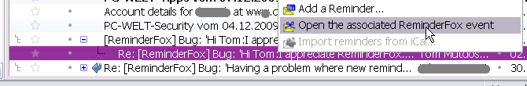
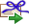
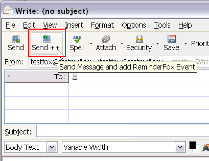
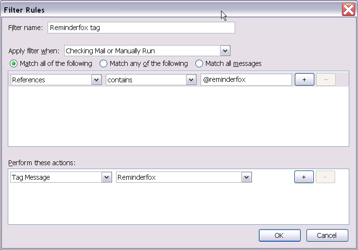
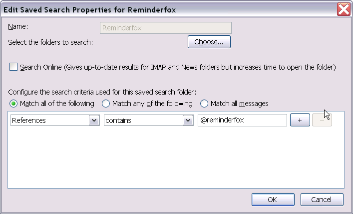

Reminder/Events with Mail Messages
Reminder/Events with Mail Messages
Reminder/Events with Mail Messages
Reminder/Events with Mail Messages
Contents |
ReminderFox offers integration with Mozilla email systems to attach a reminder to any email. This is useful when you have an email that you would like to come back to at a later date. For example, if you receive an email that is important,
and you want to ensure that you follow-up to it a certain date, you can add a reminder for that email.
To create a reminder from an email, simply right-click on any email in the list, or inside of the email itself. From the context menu, select Add a Reminder.

The Add Reminder window will come up pre-populated with the email details:

Note that this feature works for any message stored in the mail folders.
You can also select text inside of an email and when you select Add a Reminder from the context menu, the highlighted text will be included as part of the reminders notes. This is useful for quickly grabbing dates, times, and places from an
email.

When a reminder has an email associated with it, it will show up in the list with a mail icon  (you need to have the Mail column visible). You can click on a
reminder's email icon to view its associated email (or select View Mail from the reminder context menu). Note that the email can still be displayed even if the message has been moved to another folder.
(you need to have the Mail column visible). You can click on a
reminder's email icon to view its associated email (or select View Mail from the reminder context menu). Note that the email can still be displayed even if the message has been moved to another folder.

After a reminder is created from an email, the email's label (color) is changed and it's tagged with Reminderfox to signify that a reminder is associated with it. This tag is removed when the reminder is deleted or completed.

It is possible to associate a reminder with an email while sending it. To do this, use the special button  [Send++] .
(This button may be hidden, use the Customize Toolbar feature to display it).

[Send++] behaves like the normal "Send" button, but before sending the "Add Reminder" dialog will be opened so a reminder for the message to be send can be edited.
If an email with an associated reminder is replied to, the reply will also contain a reference to this reminder. This reminder can be opened by right-clicking on the message and selecting 'Open the associated Reminderfox event' from the context menu.
You can set a set up a filter to match all messages that have an associated reminder, and then tag all of this messages for future searches. To do this, go to the Tools menu and select 'Message Filters...'. Create a filter that has 'References' that contain '@reminderfox'. Then, set the action to Tag the message with 'ReminderFox'.

Once you have this filter set up, it is easy to create a 'Search Folder' for messages with reminders. Select Edit->Find->Search Messages... and configure the Search Folder to match all References that contain @reminderfox.
